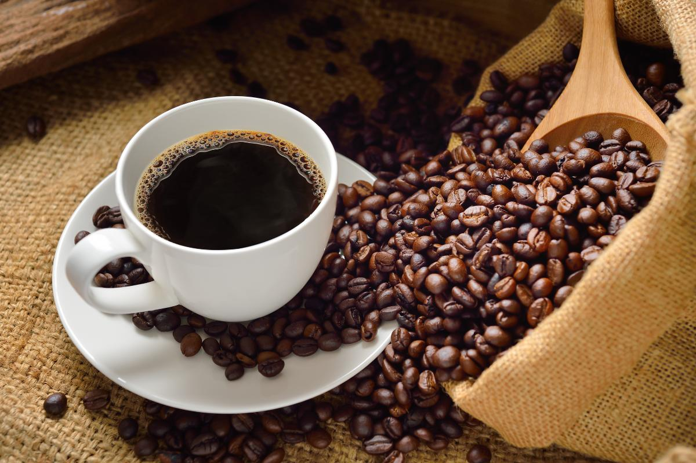

A fundadora iniciou sua jornada com o sonho de criar uma cafeteria especial.

18Priemira parceria com produtores locais, valorizandso qualidade dos grãos.
Inauguração da cafeteria e inicio de uma nova historia.
A cafeteria expandiu seu cardápio com novas experiências
Eleita a cafeteria mais hospitaleira de São Paulo pela critica gastronomica e por votação popular.
Lançamento dos nossos ateliês formativos no piso superior